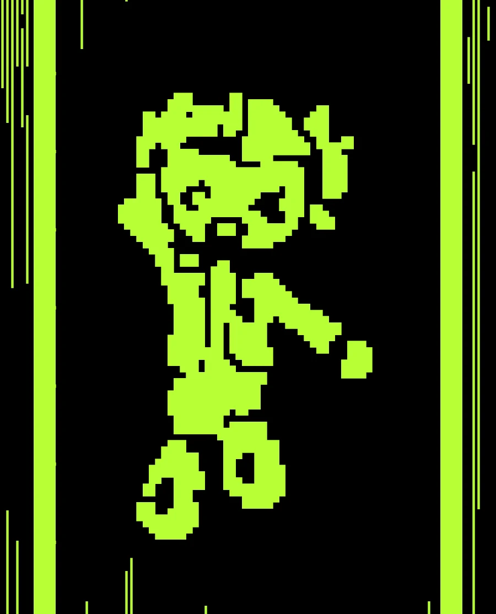

Physical siliconGDSII
GARDA-chip, in silicon layout.
This is the real, routed layout of tt_um_garda_chip: a PRISM programmable state-machine engine beside a TinyQV RISC-V core, placed on one Tiny Tapeout tile. Every image below is rendered from the final GDS file, not drawn by hand.
One tap: the explorer flies to each block, highlights it and explains it. Pause or replay at any time.
2D layout explorer
Drag to pan, pinch or scroll to zoom, double-tap to zoom in. Turn GDS layers and annotations on and off below. Coordinates are die micrometres from the lower-left corner.

Chip art: the SENO pose
Loading…
At this size the picture is visible only when you zoom in. A larger, from-afar-visible SENO needs a re-hardened layout with a bigger reserved area; that run has not been done, so it is not shown here.
Where the blocks are
Ten hard macros are placed by hand; around 31,000 standard cells fill the rest. RTL block areas are shown as heat maps of where each block's named nets are routed in the final DEF. Synthesis flattens most cell names, so this marks wiring density, not an exact boundary.
| Macro | Instances | Placed at (µm) |
|---|
Verification evidence
Numbers come from the hardened run's metrics.json (LibreLane, local build published by the repository's GDS workflow). "Passed" means the check reported zero errors; anything else is shown as it is.
| Check | Result | Status | What it means |
|---|
RTL to GDSII
How this layout was produced, stage by stage.
Power and routing
The tile's power grid is Metal4 stripe pairs (VPWR and VGND) on a 44.96 µm pitch, 5.62 µm apart, matched to the IHP SRAM's power-column grid so one set of full-height stripes powers the SRAM and the CFGMEM macros. A flow step (Project.ExtendPowerStripes) extends the stripes across the macros' Metal4 power pins.
Loading…
| Layer | Area of die | Main use |
|---|
Interactive 3D viewer
Tiny Tapeout's open-source GDS viewer, loading this tile's OASIS file. It needs WebGL and downloads about 1.6 MB, so it starts only when you ask.
Which GARDA silicon is this?
The GARDA project has more than one hardware experiment. They are separate designs and must not be confused.
GARDA-chiptt_um_garda_chip
PRISM + TinyQV on IHP SG13CMOS5L, Tiny Tapeout 8x4 tile. Routed and signed off locally (DRC 0, LVS 0); the timing caveats are listed in the evidence table. Not fabricated.
GARDA neural-logic accelerator
The neural-accelerator and chip I/O experiments described in the hackathon proposal (tt_um_wlmoi_garda_neural_logic) are a different design. Their layout and verification status are not part of this page; none of the numbers above apply to them.
Downloads and sources
The artifacts the repository's GDS workflow publishes with this site.